什么是泛型 到目前为止，所有在类声明中用到的类型都是特定的类型——或许是程序员定义的，或许是语言或BCL定义的。 然而，很多时候，我们需要把类的行为提取或重构出来 ，使之不仅能应用到它们编码的数据类型上，而且还能应用到其他类型上 。
泛型可以做到这一点。我们重构代码并额外增加一个抽象层，对于这样的代码来说，数据类型就不用硬编码 了。这是专门为多段代码在不同的数据类型上执行相同指令 的情况专门设计的。
一个栈的示例 首先实现一个int类型的栈。
class MyintStack { int StackPointer = 0 ; int [] StackArray; public void Push (int x { ... } public int Pop ( { ... } }
然后现在把相同的功能应用于float类型的值。
class MyFloatStack { int StackPointer; float [] StackArray; public void Push (float x { ... } public float Pop ( { ... } }
这个方法是可行的，但是很容易出错，而且有如下缺点：
我们需要仔细检查类的每一个部分来看哪些类型的声明需要修改，哪些类型的声明需要保留。
每次需要新类型的栈类时，我们都需要重复这个过程。
代码冗余。
不易于调试和维护。
C#中的泛型 泛型（generic） 特性提供了一种更优雅的方式，可以让多个类型共享一组代码 。泛型允许我们声明类型参数化的代码，可以用不同的类型进行实例化。即我们可以用“类型占位符”来写代码，然后在创建类的实例时指明真实的类型。
类型不是对象而是对象的模板；泛型类型也不是类型，而是类型的模板 。
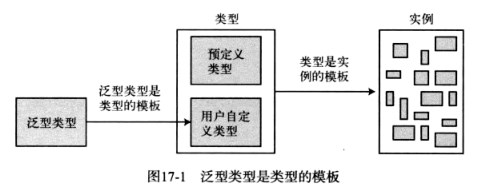
C#提供了5种泛型：类、结构、接口、委托和方法 。注意，前面4个是类型，而方法是成员。
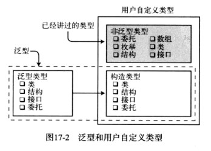
继续栈的示例 将MyIntStack和MyFloatStack两个类改为MyStack泛型类 。
class MyStack<T> { int StackPointer = 0 ; T[] StackArray; public void Push (T x ) { ... } public T Pop ( { ... } }
泛型类 创建和使用常规的、非泛型类有两个步骤：声明类和创建类的实例 。但是泛型类不是实际的类，而是类的模板，所以我们必须先从它们构建实际的类类型，然后创建这个构建后的类类型的实例 ：
在某些类型上使用占位符 来声明一个类。
为占位符提供真实类型。这样就有了真实类的定义，填补了所有的“空缺”。该类型称为构造类型（constructed type） 。
创建构造类型的实例。
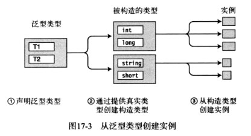
声明泛型类 如何声明泛型类：
在类名后放置一组尖括号 。
在尖括号中用逗号分隔的的占位符字符串来表示希望提供的类型。这叫做类型参数（type parameter） 。
在泛型类声明的主体中使用类型参数来表示应该替代的类型 。
例：声明泛型类示例。
class SomeClass<T1, T2> // 类型参数：T1 T2 { public T1 SomeVar; public T2 OtherVar; }
注意 ：在泛型类型声明中没有特殊的关键字 。取而代之的是尖括号中的类型参数列表 ，它可以区分泛型类与普通类的声明。
创建构造类型 一旦创建了泛型类型，我们就需要告诉编译器能使用哪些真实类型来替代占位符（类型参数）。
创建构造类型的语法如下，要替代类型参数的真实类型叫做类型实参（type argument） 。
下图为声明泛型类型和创建构造类。
类型参数和类型实参的区别
泛型类声明上的类型参数用作类型的占位符 。
在创建构造类型时，提供的真实类型是类型实参 。
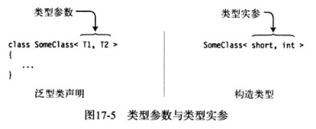
创建变量和实例 在创建引用和实例方面，构造类类型的使用和常规类型相似。
MyNonGenClass myNGC = new MyNonGenClass(); SomeClass<short , int > mySc1 = new SomeClass<short , int >(); var mySc2 = new SomeClass<short , int >();
和非泛型一样，用用和实例可以分开创建。
SomeClass<short ,int > myInst; myInst = new SomeClass<short , int >();
可以从同一个泛型类型构建出很多不同的类类型 。每一个都有独立的类类型，就好像它们都有独立的非泛型类声明一样。
class SomeClass<T1, T2> { ... } class Program { var first = new SomeClass<short , int >(); var second = new SomeClass<int , long >(); }
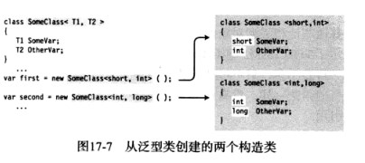
使用泛型的栈的示例 class MyStack<T> { T[] StackArray; int StackPointer = 0 ; const int MaxStack = 10 ; bool IsStackFull { get { return StackPointer >= MaxStack; } } bool IsStackEmpty { get { return StackPointer <= 0 ; } } public MyStack ( { StackArray = new T[MaxStack]; } public void Push (T x ) { if (!IsStackFull) { StackArray[StackPointer++] = x; } } public T Pop ( { return (!IsStackEmpty) ? StackArray[--StackPointer] : StackArray[0 ]; } public void Print ( { for (int i = StackPointer - 1 ; i >= 0 ; i--) { Console.WriteLine(" Value: {0}" , StackArray[i]); } } } class Program { static void Main ( { MyStack<int > stackInt = new MyStack<int >(); MyStack<string > stackString = new MyStack<string >(); stackInt.Push(3 ); stackInt.Push(5 ); stackInt.Push(7 ); stackInt.Push(9 ); StackInt.Print(); StackString.Push("This is fun" ); stackString.Push("Hi there! " ); stackString.Print(); } }
输出结果：
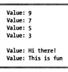
比较泛型和非泛型栈
非泛型
泛型
源代码大小
更大：我们需要为每一种类型编写一个
更小：不管构造类型的数量有多少，
可执行大小
无论每一个版本的栈是否会被使用，
可执行文件中只会出现有构造类型的类型
写的难易度
易于书写，因为它更具体
比较难写，因为它更抽象
维护的难易度
更容易出问题，因为所有修改需要应用到
易于维护，因为只需要修改一个地方
类型参数的约束 符合约束的类型参数叫做未绑定的类型参数（unbounded type parameter ） 。如果代码尝试使用其他成员，编译器会产生一个错误信息。
class Simple<T> { static public bool LessThan (T i1, T i2 ) { return i1 < i2; } }
要让泛型变得更有用，需要提供额外的信息让编译器知道参数可以接受哪些类型 。这些额外的信息就叫做约束（constraint） 。只有符合约束的类型才能替代给定的类型参数，来产生构造类型。
Where子句 约束使用where子句 列出。每一个有约束的类型参数有自己的where子句。如果形参有多个约束，它们在where子句中使用逗号分隔 。
where子句的语法如下：
关键字 类型参数 约束列表 ↓ ↓ ↓ where TypeParam : constraint, constraint, ...
要点 ：
它们在类型参数列表的关闭尖括号 之后列出。
它们之间不适用逗号或其他符号分隔。
它们可以以任意次序列出。
where是上下文关键字 ，所以可以在其他上下文中使用。
例：where子句示例。
class MyClass<T1, T2, T3> // T2、T3具有约束，T1未绑定约束 where T2 : Customer where T3 : IComparable { ... }
约束类型和次序 共有5种类型 的约束：
约束类型
描述
类名
只有这个类型的类，或从它继承的类 才能用作类型实数
class
任何引用类型 ，包括类、数组、委托和接口都可以用作类型实参
struct
任何值类型 都可以用作类型实参
接口名
只有这个接口 或实现这个接口的类型 才能用作类型实参
new()
任何带有无参公共构造函数的类型 都可以用作类型实参，叫做构造函数约束
where子句可以以任何次序列出，但是，where子句中的约束必须有特定的顺序 ：
最多只能有一个主约束，如果有则必须放在第一位。（类名、class、struct最多只能有一个）
可以有任意多的接口名约束 。
如果存在构造函数约束，则必须放在最后 。
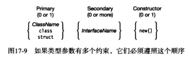
例：约束示例。
class SortedList<S> where S : IComparable<S> { ... } class LinkedList<M, N> where M : IComparable<M> where N : ICloneable { ... } class MyDictionary<KeyType, ValueType> where KeyType : IEnumerable, new () { ... }
泛型方法 与其他泛型不一样，方法是成员，不是类型 。泛型方法可以在泛型和非泛型类 以及结构和接口 中声明。
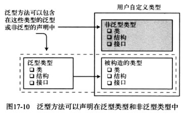
声明泛型方法 泛型方法具有类型参数列表 和可选的约束 。
泛型方法有两个参数列表 ：
封闭在圆括号内的方法参数列表 。
封闭在尖括号内的类型参数列表 。
类型参数列表 约束子句 ↓ ↓ public void PrintData<S, T>(S p, T t) where S : Person{ ↑ ... 方法参数列表 }
注意 ：类型参数列表在方法名称后 ，在方法参数列表之前 。
调用泛型方法 调用泛型方法，要在方法调用时，提供类型实参 。
MyMethod<short , int >(); MyMethod<int , long >();
下图为调用泛型方法示例。
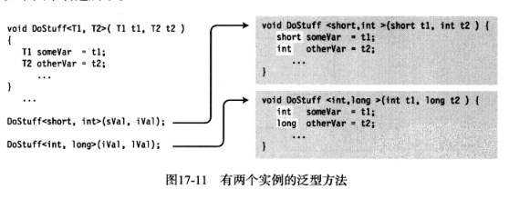
推断类型 如果我们为方法传入参数，编译器有时可以从方法参数中推断出泛型方法的类型形参中用到的那些类型 。
例：推断类型示例。
public void MyMethod<T>(T myVal) { ... }
如果我们使用int类型的变量调用MyMethod，方法调用中的类型参数的信息就多余了，因为编译器可以从方法参数中得知它是int 。
int myInt = 5 ;MyMethod<int >(myInt);
由于编译器可以从方法参数中推断类型参数，我们可以省略类型参数和调用中的尖括号 。s
泛型方法的示例 class Simple { public static void ReverseAndPrint<T>(T[] arr) { Array.Reverse(arr); foreach (T item in arr) { Console.Write("{0}" , item.ToString()); } Console.WriteLine("" ); } } class Program { static void Main ( { var intArray = new int [] { 3 , 5 , 7 , 9 , 11 }; var stringArray = new string [] { "first" , "second" , "third" }; var doubleArray = new double [] { 3.567 , 7.891 , 2.345 }; Simple.ReverseAndPrint<int >(intArray); Simple.ReverseAndPrint(intArray); Simple.ReverseAndPrint<string >(stringArray); Simple.ReverseAndPrint(stringArray); Simple.ReverseAndPrint<double >(doubleArray); Simple.ReverseAndPrint(doubleArray); } }
输出结果：
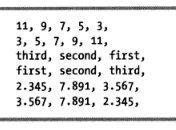
扩展方法和泛型类 扩展方法 可以和泛型类结合使用。它允许我们将类中的静态方法关联到不同的泛型类上 ，还允许我们像调用类构造实例的实例方法一样来调用方法 。
泛型类的扩展方法满足以下条件：
必须声明为static。
必须是静态类的成员 。
第一个参数类型中必须有关键字this ，后面是扩展的泛型类的名字。
static class ExtendHolder { public static void Print<T>(this Holder<T> h) { T[] vals = h.GetValues(); Console.WriteLine("{0},\t{1},\t{2}" , vals[0 ], vals[1 ], vals[2 ]); } } class Holder<T> { T[] Vals = new T[3 ]; public Holder (T v0, T v1, T v2 ) { Vals[0 ] = v0; Vals[1 ] = v1; Vals[2 ] = v2; } public T[] GetValues ( { return Vals; } } class Program { static void Main (string [] args { var intHolder = new Holder<int >(3 , 5 , 7 ); var stringHolder = new Holder<string >("a1" , "b2" , "c3" ); intHolder.Print(); stringHolder.Print(); } }
输出结果：
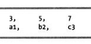
泛型结构 与泛型类相似，泛型结构可以有类型参数和约束 。泛型结构的规则和条件与泛型类是一样的。
struct PieceOfData<T> { public T _data; public PieceOfData (T value ) value ; } public T Data { get { return _data; } set { _data = value ; } } } class Program { static void Main ( { var intData = new PieceOfData<int >(10 ); var stringData = new PieceOfData<string >("Hi there." ); Console.WriteLine("intData = {0}" , intData.Data); Console.WriteLine("stringData = {0}" , stringData.Data); } }
泛型委托 泛型委托和非泛型委托非常相似，不过类型参数决定了能接受什么样的方法。
要声明泛型委托，在委托名称后、委托参数列表之前 的尖括号中放置类型参数列表 。
返回类型 类型参数 委托形参 ↓ ↓ ↓ delegate R MyDelegate<T, R>(T value );
有两个参数列表：委托形参列表 和类型参数列表 。
类型参数的范围包括：
delegate void MyDelegate<T>(T value ); class Simple { static public void PrintString (string s { Console.WriteLine(s); } static public void PrintUpperString (string s { Console.WriteLine("{0}" , s.ToUpper()); } } class Program { static void Main ( { var myDel = new MyDelegate<string >(Simple.PrintString); myDel += Simple.PrintUpperString; myDel("Hi There." ); } }
输出结果：
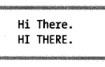
另一个泛型委托的示例 Func委托。 返回类型为TR，方法参数类型为T1和T2。
public delegate TR Func<T1, T2, TR>(T1 p1, T2 p2); class Simple { static public string PrintString (int p1, int p2 { int total = p1 + p2; return total.ToString(); } } class Program { static void Main ( { var myDel = new Func<int , int , string >(Simple.PrintString); Console.WriteLine("Total: {0}" , myDel(15 , 13 )); } }
输出结果：Total: 28
泛型接口 泛型接口允许我们编写参数和接口成员返回类型是泛型类型参数的接口。
interface IMyIfc<T> // 泛型接口 { T ReturnIt (T inValue ) ; } class Simple<S> : IMyIfc<S> // 泛型类 { public S ReuturnIt (S inValue ) { return inValue; } } class Program { static void Main ( { var trivInt = new Simple<int >(); var trivString = new Simple<string >(); Console.WriteLine("{0}" , trivInt.ReutrnIt(5 )); Console.WriteLine("{0}" , trivString.ReturnIt("Hi there." )); } }
输出结果：
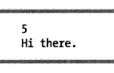
使用泛型接口的示例 如下示例演示了泛型接口的两个额外的能力 ：
与其他泛型相似，实现不同类型参数的泛型接口是不同的接口。
我们可以在非泛型类型中 实现泛型接口。
例：Simple是实现泛型接口的非泛型类。
interface IMyIfc<T> // 泛型接口 { T ReturnIt (T inValue ) ; } class Simple : IMyIfc<int>, IMyIfc<string> // 非泛型类，实现了源于同一泛型接口的两个不同接口 { public int ReturnIt (int inValue { return inValue; } public string ReturnIt (string inValue { return inValue; } } class Program { static void Main ( { Simple trivial = new Simple(); Console.WriteLine("{0}" , trivial.ReturnIt(5 )); Console.WriteLine("{0}" , trivial.ReturnIt("Hi there." )); } }
泛型接口的实现必须唯一 实现泛型类型接口时，必须保证类型实参组合 不会在类型中产生两个重复的接口。
例：第一个参数是构造类型，第二个是类型参数（不是实参）。
interface IMyIfc<T> { T ReturnIt (T inValue ) ; } class Simple<S> : IMyIfc<int>, IMyIfc<S> // 错误，因为S类型不确定，这里不允许S为int类型 { public int ReturnIt (int inValue { return inValue; } public S ReturnIt (S inValue ) { return inValue; } }
注意 ：对于泛型接口，使用两个相同接口本身并没有错 ，问题在于这么做会产生一个潜在的冲突 。因为如果把int作为类型参数来替代第二个接口中的S的话，Simple可能会有两个相同类型的接口 ，这是不允许的 。
说明：泛型接口的名字不会和非泛型冲突。例如，在前面的代码中我们还可以声明一个名称为IMyIfc的非泛型接口。